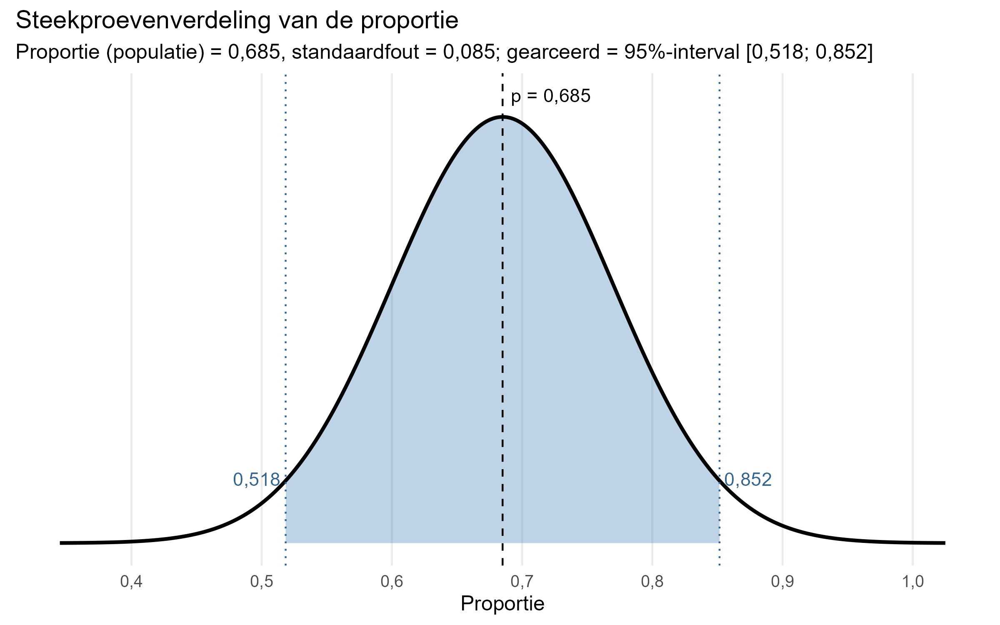
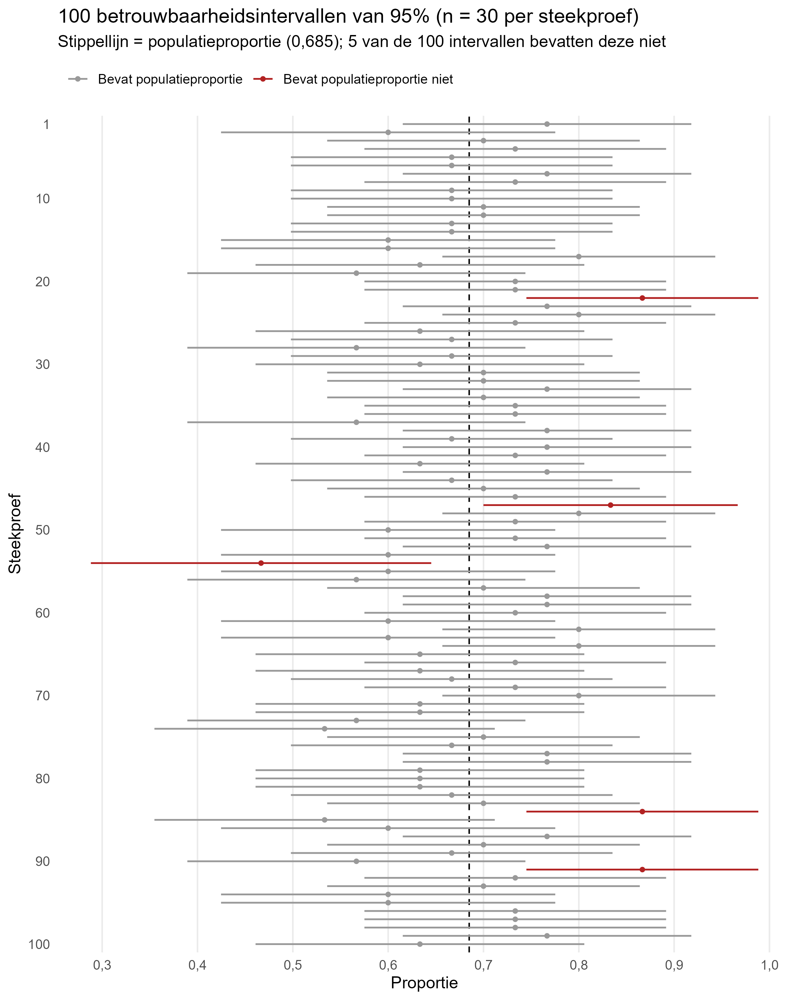

# berekenen standaardfout voor steekproeven met 30 respondenten
sqrt(0.685*(1-0.685)/30)[1] 0.08480861We zijn in het vorige hoofdstuk ingegaan op de de principes van inferentiële statistiek, de steekproevenverdeling, de standaardfout en assumpties en mogelijke fouten die kunnen plaatsvinden.
We moeten nu nog een concrete stap maken, namelijk die van het trekken van één steekproef naar het schatten van de populatieparameter. Omdat we nooit helemaal zeker weten wat het populatieparameter is, schatten we met behulp van de standaardfout hoe dicht we in de buurt zitten (de foutmarge). Dit doen we aan de hand van een betrouwbaarheidsinterval (afkorting: bhi). We zullen in dit hoofdstuk in een aantal concrete stappen laten we zien we hoe dit doen.
We beginnen met een denkbeeldig voorbeeld. We gaan er net als bij het vorige hoofdstuk vanuit dat we het populatieproportie en de standaardfout al kennen van xtc-gebruik onder uitgaande jongeren. Dit is uiteraard zelden het geval (daarom doen we onderzoek!), maar voor de uitleg die volgt is dit wel handig.
Als we volgens de centrale limietstelling oneindig steekproeven trekken van 30 personen, willen we weten wat het bereik is van 95% van de steekproefuitkomsten (proporties in dit geval) rondom het populatiegemiddelde. Dan hebben we een aardig beeld van wat voor proporties de meeste steekproeven zouden opleveren. Dat is hieronder gevisualiseerd.

De afbeelding hierboven is afgeleid van het voorbeeld uit het vorige hoofdstuk. Het toont dat we als herhaalde steekproeven zouden doen waarbij de proportie in de populatie van xtc-gebruik 0,685 is, dat 95% van de steekproeven een proportie tussen de 0,521 en 0,849 zou opleveren.
Waarom kiezen we hier voor 95%? Dat is afgeleid uit de empirische regel die we bij de Normale verdeling hebben besproken. Daar zag je bijvoorbeeld dat 95,4% van alle observaties tussen 2 standaarddeviaties boven en onder het midden van de verdeling liggen. 95% wordt vaak als conventioneel interval gebruikt, omdat het een breed interval betreft dat veel mogelijke uitkomsten bevat zonder dat het betekenisloos wordt.1 Het 95%-betrouwbaarheidsinterval correspondeert met 1,96 standaarddeviaties boven en onder het midden van de verdeling.
1 Andere veelgebruikte betrouwbaarheidsintervallen zijn 90% en 99%. De bijbehorende standaarddeviaties zijn hierbij respectievelijk 1,65 en 2,58.
Aan de hand van de formule van betrouwbaarheidsinterval kunnen we zien hoe we dit berekenen:
\[ bhi = P \pm z\times\sigma_{\hat{p}} \]
of:
\[bhi \enspace ondergrens = P - z\times\sigma_{\hat{p}}\]
\[bhi \enspace bovengrens = P + z\times\sigma_{\hat{p}}\]
Je neemt dus:
We weten voor dit voorbeeld dat:
\(P=0,685\)
\(z=1,96\) (we hebben gekozen voor een 95%-bhi)
Je hebt eerder gezien hoe je standaardfout berekent voor proporties. Je hoeft alleen de proportie en aantal respondenten in te vullen:
\[\sigma_{\hat{p}}=\sqrt\frac{\hat{p}(1-\hat{p})}{n}=\sqrt\frac{0,685(1-0,685)}{30}\]
# berekenen standaardfout voor steekproeven met 30 respondenten
sqrt(0.685*(1-0.685)/30)[1] 0.08480861De standaardfout is in dit geval dus 0,085.
Dan hoeven we in principe alleen nog de formule van het bhi in te vullen:
\[ bhi = P \pm z\times\sigma_{\hat{p}} = 0,685 \pm 1,96\times0,085 \]
We berekenen eerst het deel achter de \(\pm\) (\(z\times\sigma_{\hat{p}}\) ) en tellen dat op/trekken dat af van 0,685.
# gedeelte achter +-
1.96*0.085[1] 0.1666# berekenen bhi
0.685-0.1666 # ondergrens[1] 0.51840.685+0.1666 # bovengrens[1] 0.8516Het bereik van het 95%-bhi ligt 0,167 boven en onder de populatieproportie van 0,685.
Voilà! We weten nu dus dat als we oneindig willekeurige steekproeven zouden trekken van 30 personen uit een populatie uitgaande jongeren, dat de proporties xtc-gebruik in 95% van de steekproeven tussen de 0,512 en 0,852 zouden liggen (als overige assumpties kloppen).
Het denkbeeldige voorbeeld is instructief, maar eigenlijk overbodig. We gingen er al vanuit dat de proportie in de populatie 0,685 was. Dan is het in principe niet meer nodig een betrouwbaarheidsinterval te berekenen.
We weten nu echter ook het volgende: omdat 95% van de verdeling van mogelijke steekproefproporties tussen 0,512 en 0,852 ligt (0,167 boven of onder 0,685), is de kans 95% dat een proportie van een willekeurige steekproef binnen dit bereik valt. Dit betekent dat als we herhaaldelijk een proportie \(\hat{p}\) berekenen op basis van een willekeurige steekproef (van 30 personen in dit geval), en vervolgens een interval berekenen tussen \(\hat{p}-0,167\) en \(\hat{p}+0,167\) , dat dit interval de populatieproportie zal bevatten in 95% van de steekproeven.
Simpel gezegd, kunnen we in de formule \(bhi = P \pm z\times\sigma_{\hat{p}}\) de \(P\) vervangen door \(\hat{p}\), en dan voor elke steekproef berekenen in welk interval de populatieparameter mogelijk ligt. We zullen daarbij ook de standaardfout \(\sigma_{\hat{p}}\) opnieuw moeten berekenen, omdat die we berekend hebben aan de hand van \(P=0,685\) maar die kennen we in de werkelijkheid niet. De nieuwe formule voor het schatten van een betrouwbaarheidsinterval is:
\[ bhi = \hat{p} \pm z\times\sigma_{\hat{p}} \]
of:
\[bhi \enspace ondergrens = \hat{p} - z\times\sigma_{\hat{p}}\]
\[bhi \enspace bovengrens = \hat{p} + z\times\sigma_{\hat{p}}\]
We kunnen nu zien hoe dit werkt aan de hand van een voorbeeld. We trekken een steekproef van 30 personen en berekenen de proportie xtc-gebruikers in deze steekproef.
set.seed(42)
# steekproef trekken van 30 personen uit populatie
sample_30 <- slice_sample(data_uitgaan, n = 30)
# proportie xtc-gebruikers berekenen
table(sample_30$xtc_ooit) |> prop.table()
nee ja
0.3666667 0.6333333 Eerst berekenen we de nieuwe standaardfout:
\[\sigma_{\hat{p}}=\sqrt\frac{\hat{p}(1-\hat{p})}{n}=\sqrt\frac{0,633(1-0,633)}{30}\]
# berekenen standaardfout voor willekeurige steekproef met 30 respondenten
sqrt(0.633*(1-0.633)/30)[1] 0.0879983En dan berekenen we het 95%-betrouwbaarheidsinterval:
\[ bhi = \hat{p} \pm z\times\sigma_{\hat{p}} = 0,633 \pm 1,96\times0,088 \]
# gedeelte achter +-
1.96*0.088[1] 0.17248# berekenen bhi
0.633-0.172 # ondergrens[1] 0.4610.633+0.172 # bovengrens[1] 0.805De ondergrens van het 95%-bhi is in dit geval 0,461 en de bovengrens is 0,805. Dit noteren we ook wel als \([0,461; 0,805]\). Op basis hiervan concluderen we (voorlopig) dat in 95% van de herhaalde steekproeven de populatieproportie tussen deze twee waarden zou moeten liggen. In dit geval is dat correct: 0,685 ligt tussen 0,461 en 0,805.
Dit principe is hieronder uitgebeeld. Deze grafiek toont een simulatie waarin we 100 keer een steekproef hebben getrokken van 30 personen en voor elke steekproef het 95%-bhi hebben berekend. Wanneer een interval de populatieproportie bevat, dan overlapt het interval (horizontale grijze streep) met de verticale gestippelde lijn die de populatieproportie presenteert. In 5% van de steekproeven zie je dat het interval en de populatieproportie niet overlappen. Dit zijn steekproeven die toevallig een hele hoge of lage proportie van xtc-gebruikers bevatten. Uitgaande van een 95%-bhi, valt de populatiewaarde dan buiten het interval bij deze steekproeven. We zitten er ook weleens naast met een steekproef, ook al is aan alle assumpties voldaan. Het voordeel is wel dat we weten hoe vaak we er naast zaten, namelijk in 5% procent van de steekproeven.

Hopelijk heb je inmiddels een beetje feeling gekregen voor betrouwbaarheidsintervallen. Het vorige voorbeeld was leerzaam, maar de uitkomst was eigenlijk een beetje teleurstellend. Dat we op basis van een steekproef van 30 personen weten dat met 95% zekerheid de populatieproportie xtc-gebruikers ergens tussen de 0,461 en 0,805 ligt is nog niet zo informatief. Het kan namelijk 0,461 zijn, of 0,805, of alles daar tussen in. Het maakt nogal uit of het 46,1% gebruikers gaat of om 80,5%! Stel je voor dat de media een bericht schrijft over jouw onderzoek, dan wil je toch wat nauwkeuriger kunnen zeggen hoeveel uitgaande jongeren ooit xtc hebben gebruikt.
We gaan nu kijken hoe de grootte van de steekproef hier van invloed is (zie ook het deel over de standaardfout). We trekken nu geen steekproef van 30 personen, maar één van 10 en één van 100 personen. Eerst schrijven we even een functie om het 95%-bhi automatisch te berekenen, zodat we niet alles weer stap voor stap hoeven te berekenen.
# functie schrijven voor 95%-bhi
bhi_95 <- function(p, n) {
p + c(-1, 1) * qnorm(0.975) * sqrt(p * (1 - p) / n)
}We trekken twee steekproeven van respectievelijk 10 en 100 personen, en berekenen de proporties.
set.seed(42)
# steekproeven trekken van 10 en 100 personen
sample_10 <- slice_sample(data_uitgaan, n = 10)
sample_100 <- slice_sample(data_uitgaan, n = 100)
# proportie xtc-gebruikers berekenen
table(sample_10$xtc_ooit) |> prop.table()
nee ja
0.3 0.7 table(sample_100$xtc_ooit) |> prop.table()
nee ja
0.4183673 0.5816327 De proportie voor de steekproef met 10 personen bedraagt 0,700 en die voor 100 personen is 0,582. Nu berekenen we het 95%-bhi voor beide steekproeven.
# 95%-bhi berekenen voor beide steekproeven
bhi_95(0.7, 10) # 10 personen[1] 0.4159742 0.9840258bhi_95(0.582, 100) # 100 personen[1] 0.4853287 0.6786713Je ziet grote verschillen tussen deze betrouwbaarheidsintervallen. De steekproef van 10 personen heeft een 95%-bhi tussen \([0,416; 0,984]\). Dit is een heel breed interval. De populatieproportie van 0,685 valt er wel binnen, maar zal sowieso in 95% van de steekproeven het geval zijn. Op basis van het interval zelf kunnen we niet veel zeggen over de mogelijke proportie xtc-gebruikers. Dit alles tussen de 41,6% en 98,4% kunnen zijn.
Het 95%-bhi is daarentegen veel smaller: \([0,485; 0,679]\). Afgaande op dit interval, zou je stellen dat je met 95% zekerheid kan aannemen dat de proportie xtc-gebruikers in de populatie tussen de 48,5% en 67,9% ligt. Dit is nog steeds een redelijk breed interval, maar wel al nauwkeuriger dan wat we eerder hebben gezien. Toevallig valt de populatieproportie (0,685) wel buiten dit interval, we hebben dus een 5% misser hier!
We kunnen het voorbeeld van proportie xtc-gebruikers nu full circle afsluiten. We hebben de hele tijd voor didactische redenen aangenomen dat \(P=0,685\) , de proportie uit de dataset. We laten nu het idee los dat we de populatieparameter zouden kennen, en schatten wat deze mogelijk zou kunnen zijn op basis van de hele dataset. Nu is \(\hat{p}=0,685\). Herinner dat we xxx respondenten hebben in de dataset.
# berekenen 95%-bhi voor de complete steekproef
bhi_95(0.685, 350)[1] 0.6363352 0.7336648Onze schatting is dus dat we met 95% zekerheid kunnen zeggen dat de proportie xtc-gebruikers in de populatie uitgaande jongeren tussen 0,636 en 0,737 ligt, bij herhaalde steekproeven van xxx personen. Dat komt al aardig in de buurt van een vrij precies resultaat!